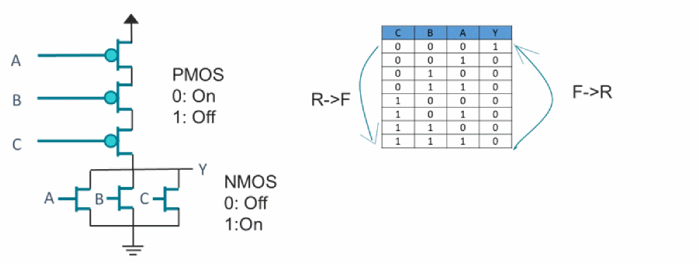
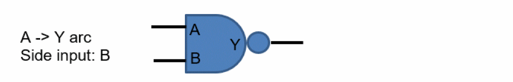

MIS and SSI Analysis
It is a prerequisite to have conditional arcs for a library cell in order to support MIS analysis. Some complex standard cells or macro cells may not have conditional arcs. In such cases, the SSI derates specified on library cells can be used for modeling MIS impact.
When advanced MIS is enabled, and there might be cells that are supported for MIS analysis (has_mis property is true) and may have SSI derates defined, then MIS takes precedence. For cells that are not supported or for which MIS is disabled (as described in Enabling/Disabling MIS for Library Cells), the SSI derates will be used.

In the figure above, for the output to switch to fall, inputs have to switch from 0 to 1. This will make the NMOS transistors to turn on, making the current drain faster. So, the Rise->Fall arc will consider the MIS impact. However, for the output to switch to rise, the inputs will have to switch from 1 to 0. This will turn off NMOS, and until the PMOS transistors are turned on, Y will not complete the transition. MIS can only cause a slowdown for the Fall->Rise transition and, thus, it is not considered for MIS impact. However, the SIS, which uses a derate-based methodology, applies derates for the Fall->Rise transition as well.
Clock Group Handling
The MIS analysis honors clock group relations specified using the set_clock_groups command.
Physically Exclusive Clocks
If data signals of side inputs and main inputs are triggered by different clocks that are defined as physically exclusive to each other, such inputs are not treated as simultaneously switching.
Asynchronous Clocks
If data signals of side inputs and main inputs are triggered by different clocks that are defined as asynchronous to each other, such inputs use infinite timing window. For MIS simulation, such inputs are treated as switching together.
In case Infinite timing windows are enabled for analysis (using the following command) all the inputs that are not triggered by physically exclusive clocks are treated as switching together.
set_si_mode -use_infinite_TW true

- Signal at input A triggered by CLK1 and input B has signals triggered by CLK1 and CLK2. Both CLK1 and CLK2 are synchronous to each other. In such scenarios, arrival at pin A is checked with timing windows of B with both clocks. Alignment that produces worst-case delay is used for analysis.
- Signals at input A triggered with CLK1 and CLK2. Input B has signals triggered by CLK1. Both CLK1 and CLK2 are synchronous to each other. In such scenarios, arrival at pin A with each clock is checked with timing windows of B. Alignment that produces worst-case delay is used for analysis.
- Both inputs have signals triggered by CLK1 and CLK2. Both CLK1 and CLK2 are synchronous to each other. Similar to above cases, arrival of A with CLK1 is checked with both timing windows of B (CLK1 and CLK2), and also arrival of A with CLK2 is checked with both timing windows of B. Alignment that produces worst-case is used.
Return to top